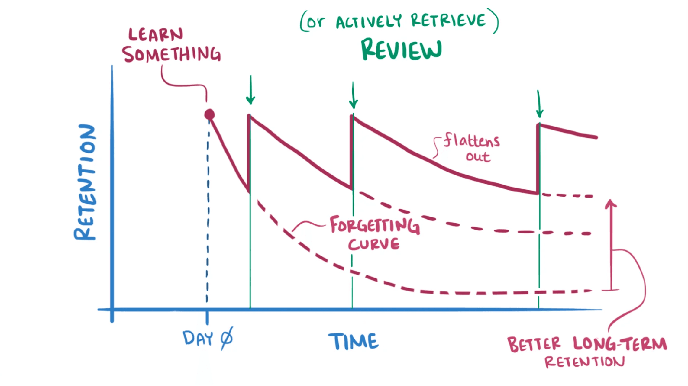

Spaced Repetition [SMART Worksheets]
Sunday December 15, 2024
Throughout elementary school and beyond, students often find themselves trapped in a cycle of repetitive instruction that fails to build true mastery or confidence. While some students struggle to grasp concepts year after year, others grow bored with the constant review. Yet, both groups are forced to march through the same material at the same pace in the same class. What young learners need is a strategic learning system that reinforces what they know at precisely the right moments, when concepts are beginning to fade but still within reach to recall from memory.
At A.C.K. Academy, we've developed SMART Worksheets that adapt to how your child retains knowledge through the science of spaced repetition. This scientifically-proven learning method predicts the optimal intervals for reviewing information to ensure long-term retention. As Dr. Piotr Wozniak, a pioneering researcher in memory and learning, explains: "Spaced repetition is a learning method based on computing optimum intervals that should separate review of individual pieces of knowledge to achieve a desired level retention." [1]
Unlike traditional worksheets that focus on one topic, SMART Worksheets strategically weave in topics the student has mastered into future worksheets, just before they begin to fade from memory, providing the perfect moment for strengthening neural connections.
Learning Tip: The best way to reinforce a memory is to recall it right before you forget it :)

Think about how children learn fractions. At first, they often find it challenging. With practice and feedback, these concepts start to click. But even after understanding fractions, we all know how easily knowledge can fade without regular practice.
That's where our SMART Worksheet system comes in. It predicts when your child needs to review the concepts they worked so hard to master. Not too soon (when it's still too easy), and not too late (when they might have forgotten too much). Our system calculates the perfect moment for recall — within a week for newly learned skills, or after a few weeks for well-established ones. SMART Worksheets continuously adapts to each student's unique learning pattern and pace, ensuring concepts stay fresh and accessible in their minds.
References:
[1] Wozniak, P. "General principles of spaced repetition." SuperMemo.guru. Available at: https://supermemo.guru/wiki/General_principles_of_spaced_repetition